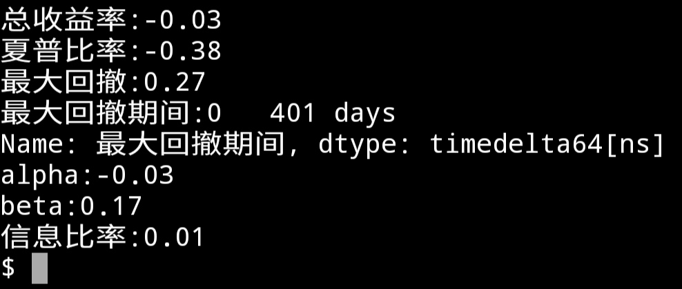
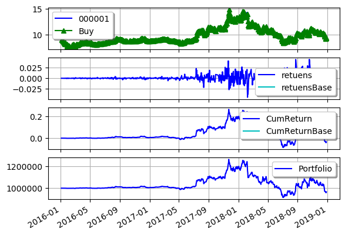

从前两篇文章中，我们使用pyalgotrade框架进行了量化策略的回测的基本操作。使用框架确实比较方便，但是仍有很多每次都要进行的重复操作，比如建立数据源，建立策略，绑定策略与分析器，运行回测，取得回测结果，绘图等。能不能进行进一步的封装?我想要的是，指定要交易的股票代码，基准股票代码，初始资金，手续费率，回测时间等参数，然后执行回测，就能得到各种回测数据，还可以绘图。
现在就开始干吧。
class Backtesting():
def __init__(self):
pass先建立构造函数，传入上面所说的各种初始值。
"""
封装回测过程
参数:
instrument: 要回测的股票代码
startYear: 回测开始年份
endYear: 回测结束年份
base: 基准股票代码，默认为300etf
cash: 初始资金，默认为1000000元
feeRate: 手续费费率，默认为0.0003
"""
"""
封装回测过程
参数:
instrument: 要回测的股票代码
startYear: 回测开始年份
endYear: 回测结束年份
strategy: 回测的策略
base: 基准股票代码，默认为300etf
cash: 初始资金，默认为1000000元
feeRate: 手续费费率，默认为0.0003
"""
class Backtesting():
def __init__(self, instrument, startYear, endYear, strategy, base = "510300", cash = 1000000, feeRate = 0.0003):
self.__instrument = instrument
self.__startYear = startYear
self.__endYear = endYear
self.__strategy = strategy
self.__base = base
self.__cash = cash
self.__feeRate = feeRate
# 要创建的内部变量
self.__strategyTest = None
self.__feed = None
self.__strategyBase = None
self.__feedBase = None
self.__brk = None
self.__brkBase = None
self.__return = returns.Returns()
self.__returnBase = returns.Returns()
self.__sharpe = sharpe.SharpeRatio()
self.__drawdown = drawdown.DrawDown()
self.__trade = trades.Trades()接着分别实现createBarfeed(self)，createBroker(self)，createStrategy(self)成员函数，具体实现跟之前的一样，就不粘上来了。
跟着要建立策略分析器并与策略对象绑定。
# 创建策略并绑定分析器
def createStrategy(self):
self.__strategyTest = self.__strategy(self.__feed, self.__instrument, self.__brk)
self.__strategyTest.attachAnalyzer(self.__return)
self.__strategyTest.attachAnalyzer(self.__sharpe)
self.__strategyTest.attachAnalyzer(self.__drawdown)
self.__strategyTest.attachAnalyzer(self.__trade)
self.__strategyBase
= self.__strategy(self.__feedBase, self.__base, self.__brk)
self.__strategyTest.attachAnalyzer(self.__returnBase)接下来就要把上面的流程串起来，本来我想在一个函数里面搞定，先创建barfeed和broker，然后创建策略，运行回测，计算指标并返回结果。但是发现有错误，运行以后程序就不停地在运行回测那里反复，最后回溯超过最大值程序停止。可能是因为pyalgotrade是事件驱动型的框架吧。只好妥协:封装的类建立了策略以后返回策略，由类的调用者手动调用run执行回测，然后再手动获取回测指标。像这样。
bt = Backtesting(["000001"], 2016, 2018, MyStrategy)
strategy = bt.getStrategy()
strategy[0].run()
strategy[1].run()
result = bt.getResult()
bt.outputResult()
输出的结果跟之前的程序一样。接下来再把绘图的功能加上吧。

图还是有点问题，我是想把策略收益跟基准收益画到一起的。另外类里面也没有做错误处理等。不过基本功能还是实现了。其它的用到再说吧。
代码：https://github.com/zwdnet/MyQuant/tree/master/03
我发文章的四个地方，欢迎大家在朋友圈等地方分享，欢迎点“在看”。
我的个人博客地址：https://zwdnet.github.io
我的CSDN博客地址：https://blog.csdn.net/zwdnet
我的博客园博客地址： https://www.cnblogs.com/zwdnet/
我的微信个人订阅号：赵瑜敏的口腔医学学习园地